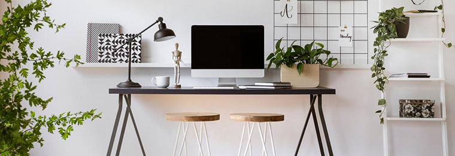
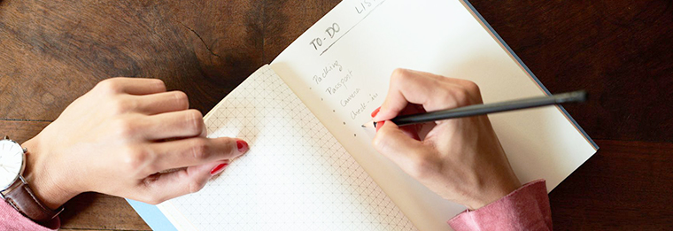
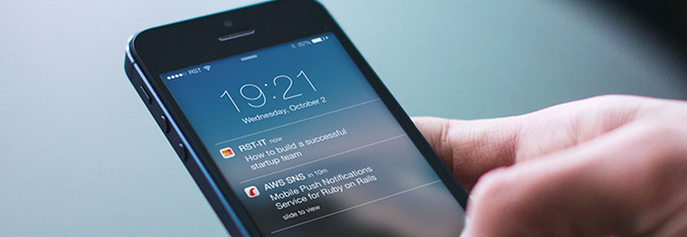

Leaving College Behind at the End of the Day
It's important to leave college behind at the end of the day. We need to be able to detach from study and enjoy relaxation, family time, and other priorities in our life. When college is a physical place, it's very easy to leave it behind when you go home at the end of the day. That detachment from home and college is physical and obvious.
It's not so easy, however, when home - the place where you are supposed to relax and unwind - also becomes the place where you carry out your studies. You might find yourself struggling to relax in your downtime because you're stressing over assignments or feeling obliged to study. In this section, we will tackle how best to deal with this problem so that you can master leaving college behind at the end of the day.
Have a distinct Workspace

As mentioned in Setting Up Your Workspace, it is important to set aside an area for studying and working. This should be a place reserved for studying and working, and not somewhere where you will go later for down time. Avoid studying and working from your bed or couch as this will make it harder with time to relax there.
Always Make Room for Down Time
When managing your time, make sure you allow yourself hours in the day to relax and unwind when it suits you, ideally in the evening time and before bed. As important as study is, your down time is just as important, so make sure to try and include that in your schedule.
Consider Setting Deadlines for Yourself

Setting a deadline can be a great way to leave college behind at the end of the day. Consider giving yourself a time every day or so that you will stop working or studying, e.g. 5 o'clock. After this point, be strict with yourself and tear yourself away from your work regardless of how much you've done. This may also motivate you in the longer term to use your work time more fruitfully.
Mute College Notifications When You Can

If you really struggle with enjoying downtime, it might be a good idea to turn off or mute notifications or updates from your college while you're relaxing as this could take you out of your relaxation and back into college mentality. There should never be a need to read an E-Mail or message instantly - they can always wait until the morning when you are in study mode.
Enjoy your downtime!
At the end of a long day from self-motivated online learning, the least you can do for yourself is enjoy the downtime. You deserve it! Make sure you spend it doing something you like, whether it's watching TV, exercising, resting, art, talking to friends, whatever it might be! Always keep doing the things you love, and the stress of online learning should feel like a distant memory!
To sum it up, don't let online learning take over your home life. College may be at home now, but make sure that home remains so much more than the place where you carry out your studies.